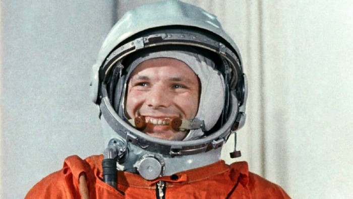

Quiero responder preguntas que talvez se preguntaron
¿Quien fue el primero que entro en el espacio?
Fue Yuri Gagarin

¿Que es el espacio?
El espacio es un medio físico en el que se sitúan los cuerpos y los movimientos, y que suele caracterizarse como homogéneo, continuo, tridimensional e ilimitado.